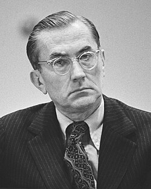

William Colby
CIA director, 1920 to 1996

An OSS commando in World War II who parachuted behind enemy lines twice, and Director of Central Intelligence from September 1973 to January 1976. 1
He directed the compiling of the CIA's Family Jewels report on its past abuses, including assassination plans, mind-control drug testing and domestic spying, which surfaced during the congressional investigations of the 1970s. A handwritten note on the disputed burned memo is attributed to him. He said he had declined an invitation to join the Knights of Malta. 1,2,3
He died in 1996 on a solo canoe trip; Maryland's medical examiner ruled the death accidental. 1
Open in the interactive Watcher
Related
- OSS OSS Jedburgh
- CIA CIA director, 1973 to 1976
- Church Committee
- Order of Malta headquarters Knights of Malta
Sources
- William Colby Wikipedia
- The JFK-MJ-12 documents (part of a series by Seamus Coogan) Kennedys and King, Aug. 15, 2011
- Their Will Be Done (Martin A. Lee) Mother Jones, July 1983